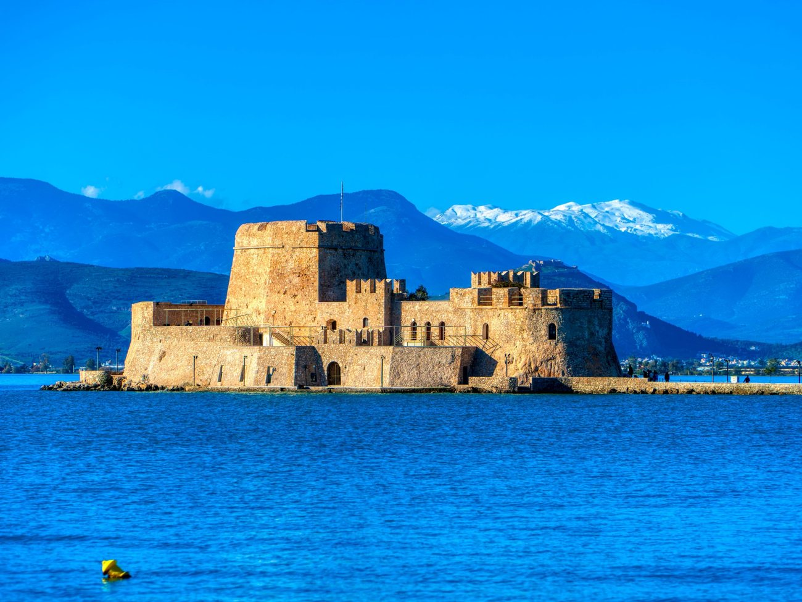
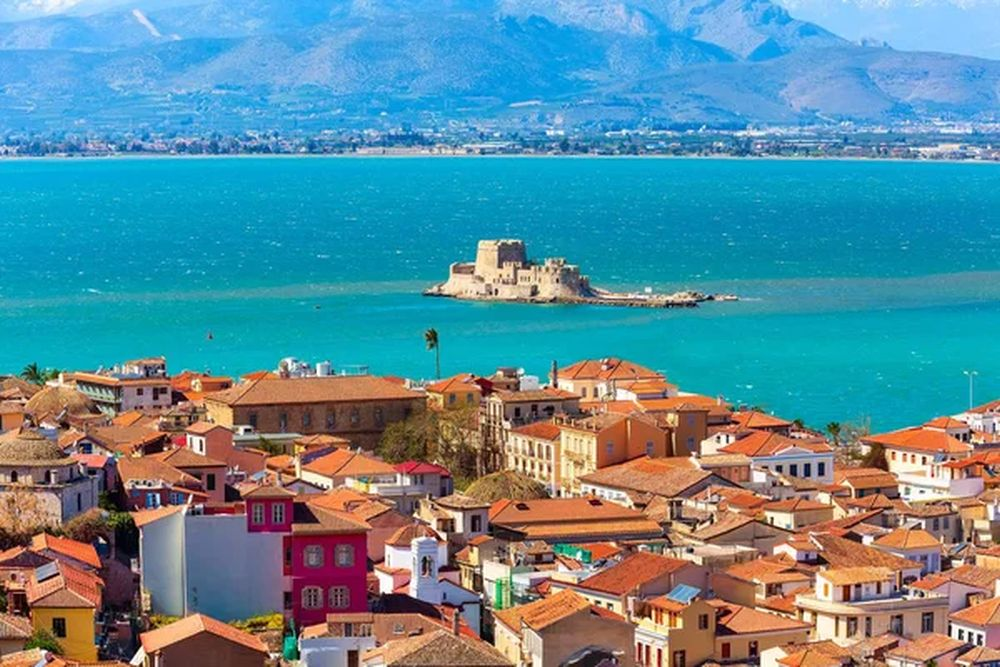
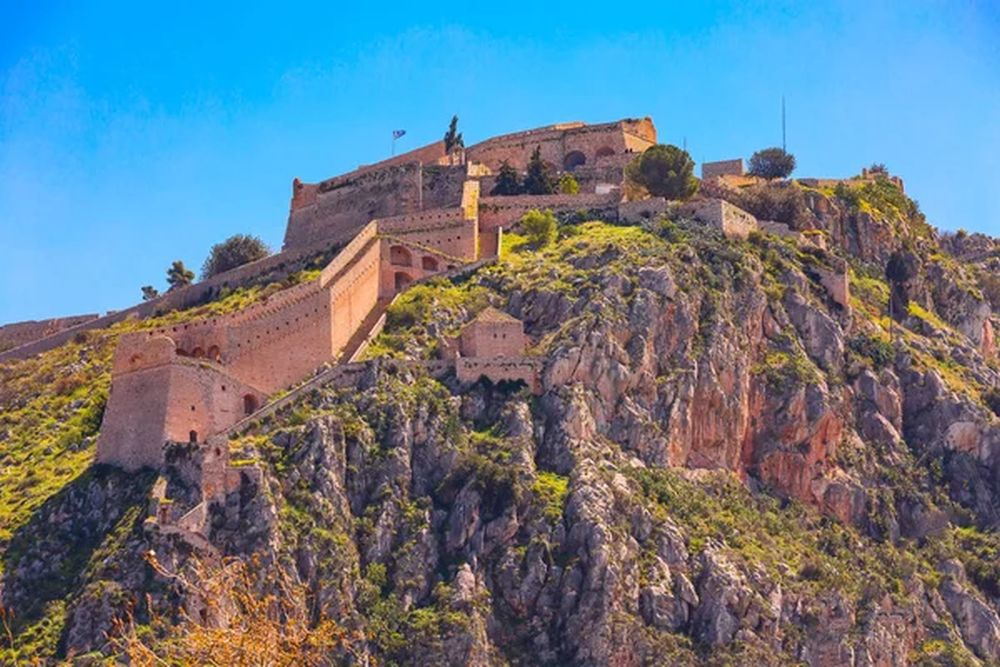
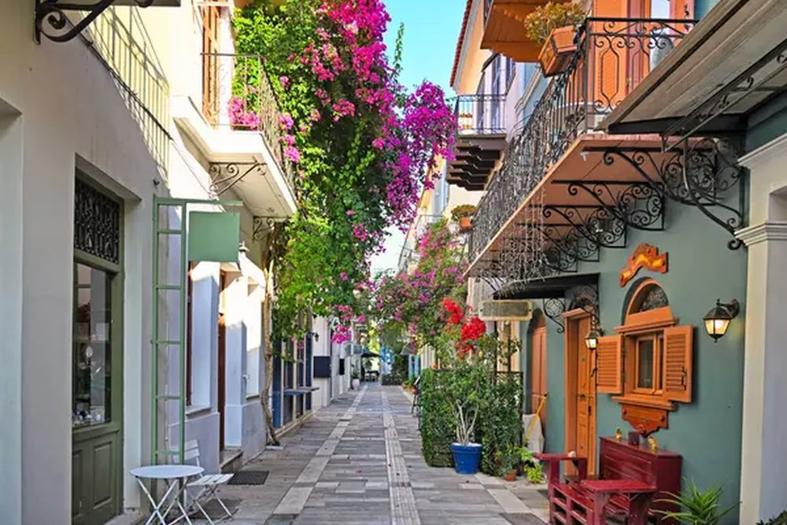
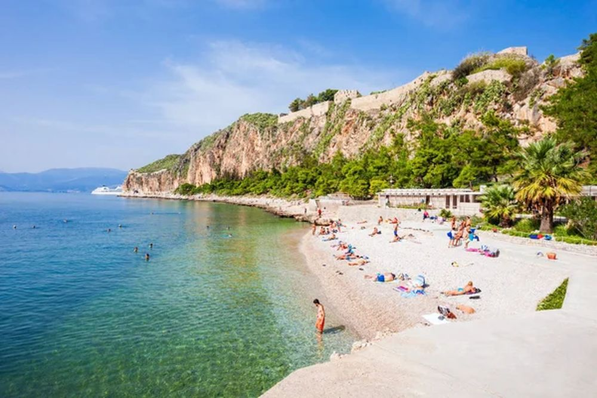

A new graduate school · Est. in Nafplio
World-class finance education, in the heart of Greece.
A new graduate school in Nafplio that brings the world's leading professors to teach focused two-week courses — degrees of international standing, rooted in Greece.

Our vision
Greece has the minds. It deserves the school.
Greece has brilliant people and a global diaspora, yet no finance school of truly international standing. We are building one: a focused school of finance and business, taught by some of the best professors in the world, awarding recognized degrees, in the town that was the country's first capital. The aim is simple — keep talent in Greece, bring the world to it, and lift the place with it.
International faculty
Leading scholars from the world's top institutions.
Two-week courses
A full course, condensed into two weeks of focused teaching.
Recognized degrees
Accredited under Greece's framework for non-state universities.
Based in Nafplio
The first capital of modern Greece, below the Palamidi.
Programmes
Three programmes, one focused school.
We begin with three graduate programmes, all taught in English, all built around the two-week model.
MBA
A general-management MBA for the next generation of leaders.
MSc in Finance
Technical and quantitative — a bridge to industry and to doctoral research.
Executive MBA
For experienced executives, in two-week blocks.
The two-week model
A full course, taught over two weeks.
Instead of a thirteen-week term, each course is taught in two focused weeks. A leading professor comes to Nafplio with their doctoral students and teaches an intensive course. Two weeks of teaching, and two weeks in Greece — work and holiday together, a place in a new international faculty, and a way to give back. For students, it means access to scholars they would otherwise never meet.
For professors
Good pay, two weeks in Nafplio, and standing in a new international faculty.
For students
Direct teaching from world-leading names, in small classes.
For Greece
Talent that stays, a town that rises, and a bridge to the diaspora.
The founding plan at a glance
Small, selective, serious.
These figures describe the founding plan, not current enrolment.
Why Nafplio
The first capital of modern Greece.
Below the Palamidi fortress, on the Argolic Gulf, Nafplio is one of the most beautiful towns in Greece — and already home to Harvard's Center for Hellenic Studies. It is a place scholars want to come to, and a setting worthy of the ambition.




Join us
We are talking to the people who can help build this.
Professors
Teach a two-week course in your field.
Supporters & donors
Fund a chair, a scholarship, or the campus.
Future students
Register your interest in a programme.
Companies
Partner on executive training and hiring.